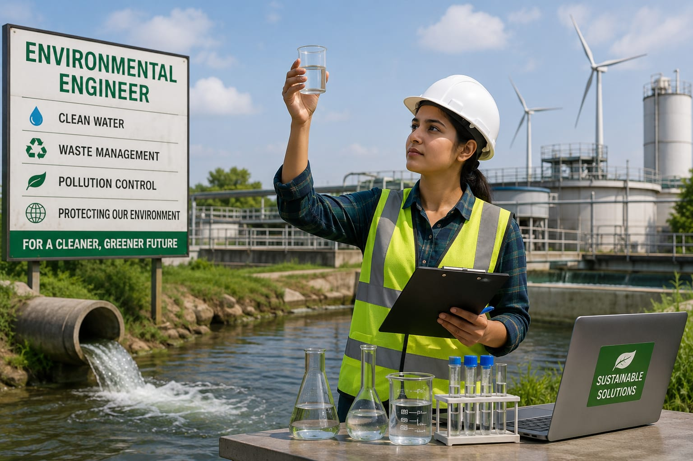

- Every day, we use water for drinking, cooking, and bathing.
- We get this water from rivers and lakes and reaches our home through pipe system.
- Water taken from the rivers may not always be safe.
- In the water treatment plant, water is cleaned by removing dirt, harmful chemicals, and other unwanted substances.
- The person who designs and manages this process is called an Environmental Engineer.
- 👉 In simple words: Environmental Engineers help keep our water, air, and environment clean and safe.
Environmental Engineer
What Do They Do?

🎓 How to Become an Environmental Engineer
These courses help students learn pollution control, waste management, water treatment, and environmental protection technologies.
Diploma in Environmental Engineering
Duration: 3 Years
Eligibility: 10th Pass with Mathematics and Science
Entrance Exam: State Polytechnic Entrance Exam
Note: After completing the diploma, students can work in environmental monitoring, pollution control, and water treatment sectors, or continue their studies through lateral entry into B.Tech Environmental Engineering.
These courses teach pollution control, water treatment, waste management, environmental sustainability, and environmental protection technologies.
B.Tech / B.E. in Environmental Engineering
Duration: 4 Years
Eligibility: 12th Pass with Physics, Chemistry, and Mathematics (PCM)
Entrance Exam: JEE Main, JEE Advanced, State Engineering Entrance Exams, or Private University Entrance Exams
📝 Exam Details
(Click on the exam name to see full details)
JEE Main JEE Advanced State Engineering Entrance ExamsNote: Environmental Engineering graduates work in pollution control, water treatment, waste management, environmental consulting, sustainability projects, and government environmental agencies.
Students with a diploma can join the second year of B.Tech Environmental Engineering through lateral entry.
B.Tech Lateral Entry in Environmental Engineering
Duration: 3 Years
Eligibility: 3-Year Diploma in Environmental Engineering or other eligible branches
Entrance Exam: State Lateral Entry Entrance Exams
Note: Lateral entry allows diploma holders to directly enter the second year of B.Tech Environmental Engineering and continue toward advanced environmental engineering careers.
Postgraduate courses help students develop advanced knowledge in environmental protection, sustainability, pollution control, and environmental research.
M.Tech in Environmental Engineering
Duration: 2 Years
Eligibility: B.Tech / B.E. in Environmental Engineering, Civil Engineering, Chemical Engineering, or related fields
Entrance Exam: GATE
Note: An M.Tech in Environmental Engineering can lead to careers in environmental consulting, pollution control, sustainability projects, research organizations, government agencies, and higher studies such as Ph.D.
Note:
(Age limits, marks, and admission process may vary depending on the college or state. These courses are available in many colleges and universities across India. You can choose colleges based on your location, budget, and entrance exams.)
🏛️ Top Colleges for Environmental Engineering
(Tap on a college to view the details)
After Class 12
IIT (ISM) Dhanbad IIT Bombay Pondicherry University Delhi Technological University (DTU), DelhiAfter Diploma (Lateral Entry to B.Tech)
Delhi Technological University (DTU)STEP 1
Imagine you are working as an Environmental Engineer at a water treatment plant.
STEP 2
Every day, large amounts of dirty water arrive at the plant.
STEP 3
This water needs to be cleaned before it can be safely released or used.
STEP 4
Your job is to manage the treatment systems that remove pollutants from the water.
STEP 5
You monitor tanks, filters, pumps, and other treatment equipment.
STEP 6
You make sure the water is cleaned properly and meets safety standards.
STEP 7
As a result, clean and safe water can be released back into the environment or supplied to people.
STEP 8
If you enjoy protecting the environment and solving real-world problems, this career may suit you.
Where do Software Engineers work? (Job Roles + Growth)
Environmental Engineers work in : Environmental consulting firms, Water and wastewater treatment plants, Waste management facilities, Pollution control industries, Environmental testing laboratories, Manufacturing industries, Government environmental departments, and renewable energy projects.
🟢 Beginner Roles
Environmental Trainee / Junior Engineer
(After B.Tech)
Collects water, soil, and air samples to monitor pollution levels.
Safety & Field Assistant
(After Diploma)
Inspects waste treatment systems and ensures safety compliance.
🔵 Mid-Level Roles
Environmental Consultant / Impact Analyst
(After Experience)
Studies environmental impact and prepares reports for approvals.
Water Treatment Plant Engineer
(After Experience)
Manages water purification and wastewater treatment systems.
🟣 Advanced Roles
Chief Sustainability Officer (CSO)
(After Long Experience)
Leads sustainability initiatives and environmental policies.
Lead Climate Scientist / R&D Specialist
(After Master's / PhD)
Develops solutions for climate change and environmental protection.
Water Treatment Companies
Provide clean drinking water and wastewater treatment solutions.
Waste Management Companies
Manage recycling, waste disposal, and resource recovery projects.
Environmental Consulting Firms
Assess environmental impacts and help industries follow regulations.
Sustainability & ESG Companies
Develop eco-friendly strategies and sustainability programs.
Climate Change & Research Organizations
Work on climate studies, carbon reduction, and environmental research.
Renewable Energy Companies
Support solar, wind, and other clean energy projects.
(Click Yes or No for each question)
1. Do you know how clean drinking water reaches our homes?
2. Have you ever wondered how dirty water is made clean and safe to use?
3. Are you interested in learning about the systems used to reduce pollution and protect the environment?
4. Imagine you are an Environmental Engineer. A lot of waste is produced in your area every day. It is not disposed of properly, which causes pollution of the land and water. You design a new system for disposing of the waste that helps reduce pollution. Are you interested in doing this type of work?
5. Imagine a company wants to build a new factory in a town. Your job as an Environmental Engineer is to make sure the factory does not harm the people, land, or animals around it. You check the factory’s plans and suggest ways to reduce any harm to the environment. Are you interested in doing this type of work?